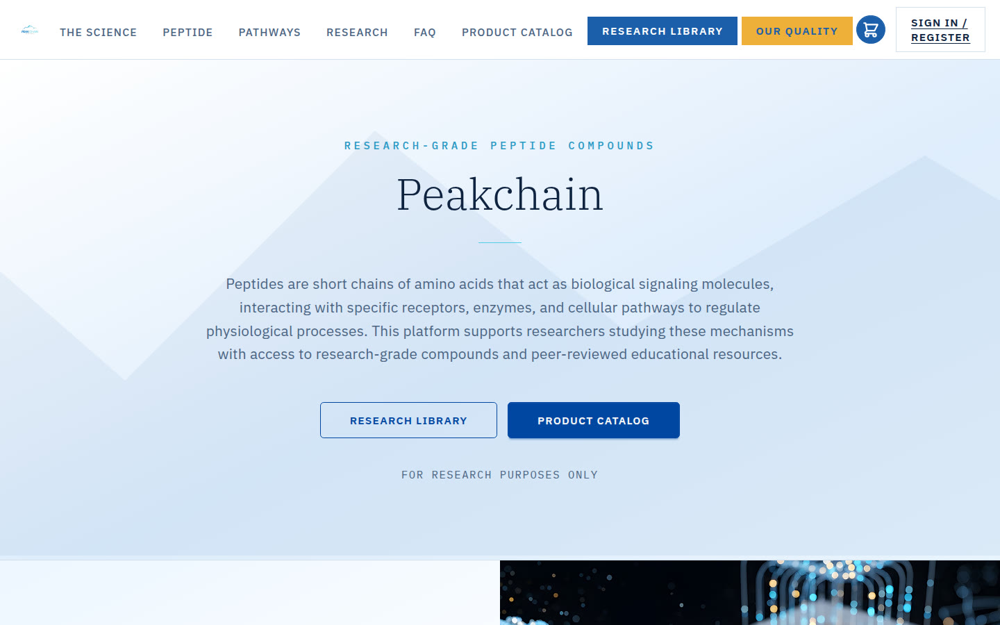
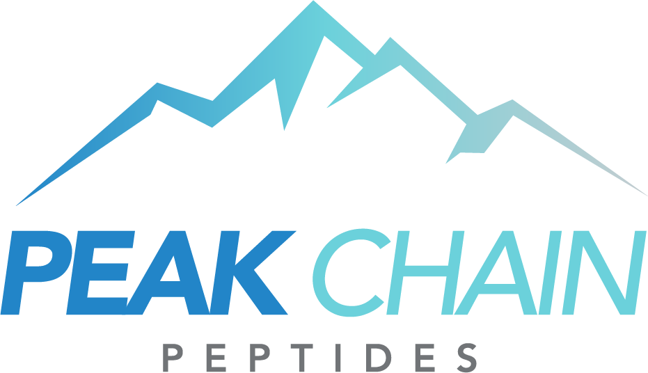
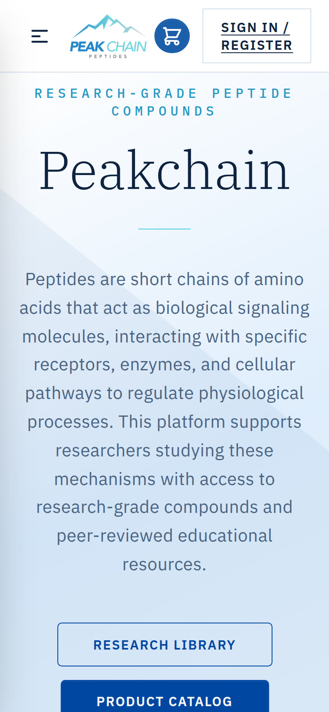

Selected Work / Case Study № 04
research peptides · custom website
Peak Chain Peptides · peakchainpeptides.com
Peakchain
Peptides are short chains of amino acids that act as biological signaling molecules, interacting with specific receptors, enzymes, and cellular pathways to regulate physiological processes. This platform supports researchers studying these mechanisms with access to research-grade compounds and peer-reviewed educational resources.

The Brief
Built Bond by Bond
A peptide is a short chain of amino acids — a precise molecular sequence carrying targeted biological instruction. Every compound we supply is synthesized to that exact standard: the right sequence, the right purity, the right result. All compounds are for in vitro research use only.
Line on the live homepageFor research purposes only
02 — Identity
Tokens from the stylesheet
Swatches are the light set in the live stylesheet whose primary is #0048a0, matching the blue Product Catalog button in the stored homepage shot. A darker set is also in that file and is not shown.
Color
Primary
--color-primary#0048a0
Secondary
--color-secondary#008eb0
Accent
--color-accent#62cddb
Surface
--color-base-100#ffffff
Text
--color-base-content#001529
Type
Aa Bb
ABCDEFGHIJKLMNOPQRSTUVWXYZ · abcdefghijklmnopqrstuvwxyz · 0123456789
IBM Plex Serif · named in the live stylesheet
Aa Bb
ABCDEFGHIJKLMNOPQRSTUVWXYZ · abcdefghijklmnopqrstuvwxyz · 0123456789
IBM Plex Sans · named in the live stylesheet. IBM Plex Mono is also named.
Logo

Live file logo.png, 931×536. Shown smaller than the file. The work grid name is Peak Chain Peptides. The homepage heading is Peakchain.

Screenshot pending — content needed
A second mobile screen was not in the prototype files or this repo. The Hive study shows two phones. This page has the one homepage capture stored for the work grid.
03 — Mobile
Homepage on a phone
The phone frame is the homepage screenshot stored with this work page.
Results pending — content needed
No load time or before-and-after figure is in a project guide or scope file. Numbers that appear above are lines printed on the live homepage, not a measured outcome of this page.
04 — In Detail
Lines from the live homepage
Screenshot pending — content needed
Section crops were not in the source files. The three notes below are homepage lines, not separate screenshots.
Homepage
Research purposes only
For research purposes only.
Homepage
In vitro
All compounds are for in vitro research use only.
Homepage
Science and mission
Research integrity and documentation quality are the same obligation.
Quote pending — content needed
No named quote or testimonial was copied. Homepage review counts, where the site prints them, stay in the brief as the site's own line.
05 — The long scroll
Homepage viewport
The image is the homepage capture already in this repo. It is the top of the page, not a stitched full-page scroll.
Screenshot pending — content needed
A full-page scroll capture is not in the source files.